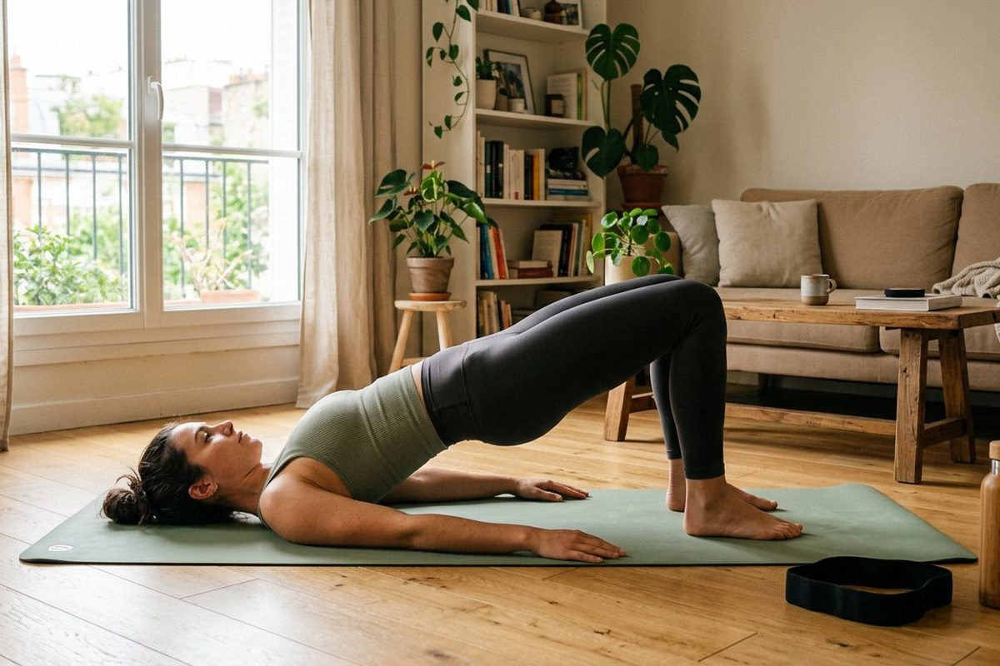

20-Minute Full-Body Home Workout (No Equipment)
You do not need a gym to build strength. You need four movements that cover the main patterns — a squat, a push, a hinge and a core — and a way to make them harder without adding weight. This circuit uses time under tension and single-leg variations to do that, and it takes twenty minutes, which is short enough to actually do on a Wednesday.
